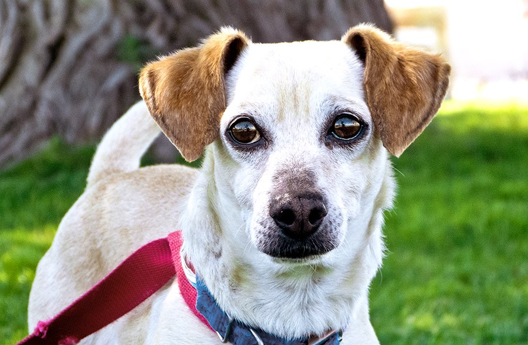

Why Adopt?

Millions of pets enter shelters every year in need of a loving home. Join the solution by adopting a loving pet! You can view some of our adoptable pets, pets in need of foster, and some happy tails (success stories) on our website!
Millions of pets enter shelters every year in need of a loving home. Join the solution by adopting a loving pet! You can view some of our adoptable pets, pets in need of foster, and some happy tails (success stories) on our website!